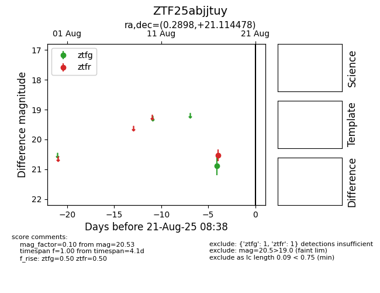

Target ZTF25abjjtuy at 2025-08-21 08:38, see:
FINK: fink-portal.org/ZTF25abjjtuy
Lasair: lasair-ztf.lsst.ac.uk/objects/ZTF25abjjtuy
ALeRCE: alerce.online/object/ZTF25abjjtuy
alt names
ZTF25abjjtuy (ztf,alerce)
coordinates:
equatorial (ra, dec) = (0.2898,+21.11448)
galactic (l, b) = (107.5067,-40.24649)
photometry
last ztfg=20.89, ztfr=20.53
1 ztfg, 1 ztfr detections
